Rerun: Death Jail Summer Escape! Lite Version
~Medb's Great Prison of Sin and Despair 2017~
Event Summary
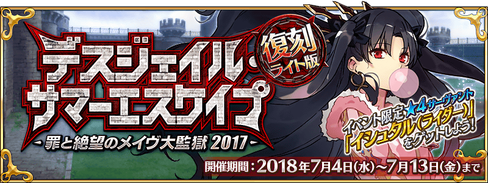
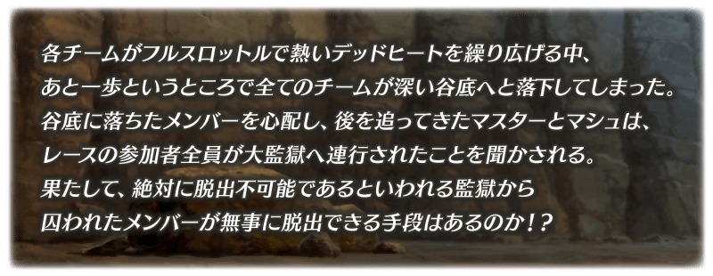
Event Summary
◆ Event Period ◆
July 4, 2018 (Wednesday) 18:00 to July 13, 2018 (Friday) 12:59
◆ Event Summary ◆
The Limited Event ｢Rerun: Death Jail Summer Escape!! ~Medb's Great Prison of Sin and Despair 2017~ Lite Version｣ will be held!
Clear Support Quests to gather event items and help the Servants escape!
This is Part 2 of a two-part event. Main Quests from Part 1 must be cleared to participate.
｢4★ (SR) Ishtar (Rider)｣ will temporarily join your party once a certain Main Quests from Part 1 is cleared, and will
permanently join your party once all the Main Quests from Part 2 are cleared.
Let's clear the event and permanently recruit Ishtar (Rider) into out party!
※ This event is a ｢Lite Version Rerun Event｣ of the same event held during 2017 except re-adjusted a bit to be easier to play.
※ The ｢Holy Grail｣ will be replaced by ｢Crystallized Lore｣ as completion reward if you already obtained the ｢Holy Grail｣ reward from last year.
◆ Event Requirement ◆
「Rerun: Dead Heat Summer Race! ~Ishtar Cup of Hope and Dreams 2017~」 must be cleared to participate in this event.
How to Play the Event
Help the Servants escape the prison by doing the race!
Clear you team's Support Quests to gather Support Points and push them closer to the goal!
When a team reaches the goal for each round, a new Main Quest will unlock!
Clear all Main Quest from Part 2
To permanently recruit Ishtar (Rider)!
Gather the Event Item ｢Venus in the Morning Sky｣ to Level Up Ishtar's NP!
｢Venus in the Morning Sky｣ can only be obtained during Part 2!
※ ｢Venus in the Morning Sky｣ can only be exchange for a copy of Ishtar (Rider) after she permanently joins your party.
※ ｢Venus in the Morning Sky｣ can be obtained from Challenge Quests during Part 2 once all Main Quests are cleared.
Race Support Procedure
During this event, proceeding through the Main Quest will unlock the ｢Race Support Battles｣ where six teams will compete
for the rankings. Clearing the Support Battle Quests of your selected team will earn you some ｢Support Points｣ and will move
them closer to the finish line. Clear the quest of your favorite team and help them escape before the others!
The racing progress of each team will depend on how much total Support Points have accumulated from all the Masters
participating. Work together with other Masters who support the same team as you, and let them escape!
Once the teams reach the goal, Race Support Battles will end, and you'll receive a reward based on the winning team.
Once the ｢Race Support Battles｣ are over, the current race will end, and the next round will begin.
◆ Progressing through the Main Quests ◆
The next Main Quests will be unlocked once all the team reaches the goal and completes the race.
※ Even if the round is over, you will not be allowed to go to the next round without proceeding with the Main Quests first.
Also, you can no longer return to a previous round once you've already moved on to the next one.
※ Depending on the time your participation, Support Battle Quests may have ended. Even though Main Quests are unaffected,
you can no longer participate in Support Battle Quests once their period is over.
※ Once all Main Quest from Part 2 has been cleared, all rounds on the whole map will be restored and you can participate in
Support Battle Quests again.
Hints and Strategies
◆ Hints and Strategies: Part 1 ◆
Using Boost Items such as the ｢Star Spoon｣, ｢Calorie Meat｣, and ｢NP Hammer｣ which can be acquired from the Event Item
Exchange shop or as quest rewards will grant you an advantage during battle when doing Support Battle Quests.
You can select 1 of the Boost Items before starting a quest.
※ Boost Items affect all allies (including Sub Members) and will last the whole battle.
Star Spoon
Calorie Meat
NP Hammer
For all allies
For all allies
For all allies
Star Drop Rate Up! NP Gain Up! NP Strength Up!
■ Use Boost Items to increase Support Points you get!
Clearing Support Battles with Boost Items will allow you to gain more (double) Support Points.
Support Points +1
Support Points +2
■ Learn the compatibility to increase Support Points you get even further!
Each Boost Item is compatible with certain teams. Using them on a compatible team will allow you to gain even more (triple)
Support Points.
Support Points +1
Support Points +3
After selecting the Support Battle Quest for a team you wish to support, starting the quest will show a list of Boost Item Selection screen.
The displayed number will be the bonus multiplier for that team, and the item which grants the highest value is the most compatible with your team.
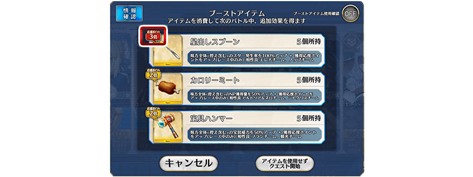
◆ Hints and Strategies: Part 2 ◆
Certain Servants will increases the number of ｢One Candy Drop｣, ｢Instant Noodle｣, or ｢Connacht Coin｣ event items you receive from battle!
Event Servants who will debut during this event will increase the amount of dropped items even more than Other Event Servants.
[Event Servants]
Increase One Candy Drop, Instant Noodle, & Connacht Coin drops by 2
[Other Event Servants]
Increase One Candy Drop, Instant Noodle, & Connacht Coin drops by 1
※ Please note that Servants for Part 1 and Part 2 may vary.
◆ Hints and Strategies: Part 3 ◆
Equipping the Event Limited Craft Essence 「5★ (SSR) Dive to Blue」 which can be acquired from the Event Item Exchange Shop,
will also increases the number of ｢One Candy Drop｣, ｢Instant Noodles｣, and ｢Connacht Coin｣ event items you receive from battle!.
Equip 「Dive to Blue」
One Candy Drop Instant Noodles Connacht Coin
Drop Amount Up!!
◆ Hints and Strategies: Part 4 ◆
Equipping Limited Time Craft Essences will increase the number of ｢One Candy Drop｣, ｢Instant Noodles｣, or ｢Connacht Coin｣
event items you receive from battle!
※ Please note that the dropped items aren't 100% guaranteed for each quest.
｢Moment of Midsummer」 ｢King Joker Jack」 ｢Chaldea Beach Volleyball」
Connacht Coin Instant Noodles One Candy Drop
Drop Amount Up! Drop Amount Up! Drop Amount Up!
◆ Hints and Strategies: Part 5 ◆
Equipping Limited Time Craft Essences from Part 1 will also increase the number of ｢One Candy Drop｣, ｢Instant Noodles｣, or
｢Connacht Coin｣ event items you receive from battle!
※ Please note that the dropped items aren't 100% guaranteed for each quest.
｢Summer Little」 ｢White Cruising」 ｢Sugar Vacation」
Connacht Coin Instant Noodles One Candy Drop
Drop Amount Up! Drop Amount Up! Drop Amount Up!
Event Limited Craft Essence
Ishtar (Rider)
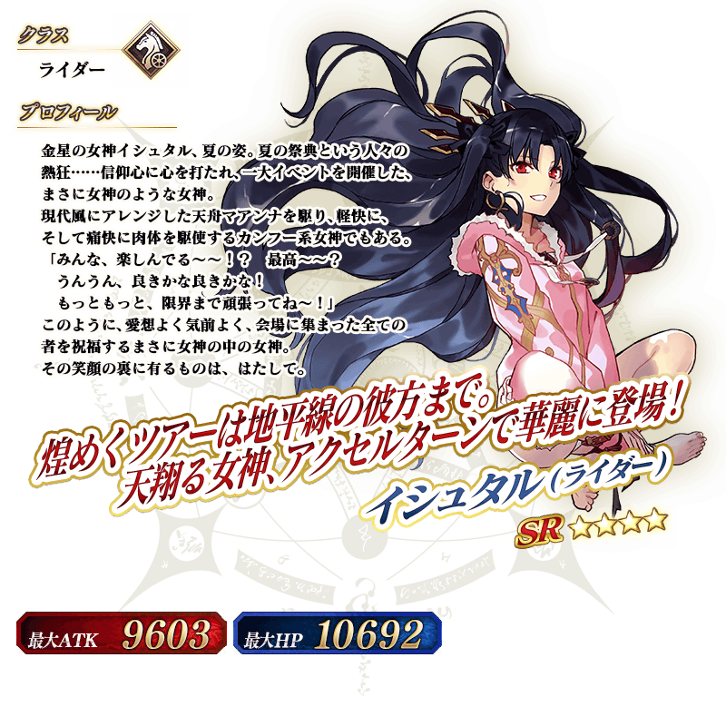
Ishtar
※ ｢Venus in the Morning Sky｣ can only be exchange for a copy of Ishtar (Rider) after she permanently joins your party.
※ ｢Venus in the Morning Sky｣ can be obtained from Challenge Quests during Part 2 once all Main Quests are cleared.
Ishtar (Rider) Noble Phantasm!
Event Item Exchange
◆ Exchange Method ◆
Exchange Period: July 4, 2018 (Wednesday) 18:00 to July 20, 2018 (Friday) 12:59
※ The items ｢One Candy Drop｣, ｢Instant Noodles｣, ｢Connacht Coin｣, ｢Star Spoon｣, ｢Calorie Meat｣, and ｢NP Hammer｣ will
disappear from your inventory after the deadline.
You can access the Event Shop by going to Da Vinci's workshop and selecting the 「Event Item Exchange」.
※ ｢Hero Crystal: Meteor Fou ALL 4★ (HP)｣ and ｢Hero Crystal: Solar Fou ALL 4★ (ATK)｣ will only become available in the shop
after clearing all the Main Quests for Part 2.
◆ Venus in the Morning Sky Exchange ◆
◆ Connacht Coin Exchange ◆
◆ Instant Noodles Exchange ◆
◆ One Candy Drop Exchange ◆
◆ Star Spoon, Calorie Meat, NP Hammer Exchange ◆
Challenge Quest
Once all Event Quests have been cleared, a 「Challenge Quest」 with an insane amount of difficulty will be unlocked.
The Challenge Quest will not disappear once cleared, which means you can keep challenging the quest as many time as you
prefer and try out different combination of Servants and Craft Essences.
※ Quest clear rewards and dropped items can only be obtained during your first clear.
◆ Challenge Quest Requirements ◆
Only players who have completed ｢Final Singularity: Grand Time Temple - Solomon｣ can participate in this quest.
◆ Challenge Quest 1st Time Clear Reward ◆
Crystallized Lore x1
Da Vinci's Workshop Limited Item!
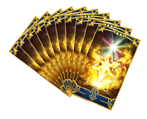 We will add the following item to ｢Da Vinci's Workshop｣ for a limited time only.
◆ Exchange Period ◆
July 4, 2018 (Wednesday) 18:00 to July 13, 2018 (Friday) 12:59
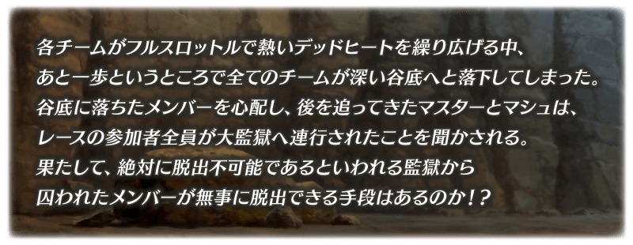
July 4, 2018 (Wednesday) 18:00 to July 13, 2018 (Friday) 12:59
The Limited Event ｢Rerun: Death Jail Summer Escape!! ~Medb's Great Prison of Sin and Despair 2017~ Lite Version｣ will be held!
Clear Support Quests to gather event items and help the Servants escape!
This is Part 2 of a two-part event. Main Quests from Part 1 must be cleared to participate.
｢4★ (SR) Ishtar (Rider)｣ will temporarily join your party once a certain Main Quests from Part 1 is cleared, and will
permanently join your party once all the Main Quests from Part 2 are cleared.
Let's clear the event and permanently recruit Ishtar (Rider) into out party!
※ This event is a ｢Lite Version Rerun Event｣ of the same event held during 2017 except re-adjusted a bit to be easier to play.
※ The ｢Holy Grail｣ will be replaced by ｢Crystallized Lore｣ as completion reward if you already obtained the ｢Holy Grail｣ reward from last year.
「Rerun: Dead Heat Summer Race! ~Ishtar Cup of Hope and Dreams 2017~」 must be cleared to participate in this event.
※ ｢Venus in the Morning Sky｣ can only be exchange for a copy of Ishtar (Rider) after she permanently joins your party.
※ ｢Venus in the Morning Sky｣ can be obtained from Challenge Quests during Part 2 once all Main Quests are cleared.
During this event, proceeding through the Main Quest will unlock the ｢Race Support Battles｣ where six teams will compete
for the rankings. Clearing the Support Battle Quests of your selected team will earn you some ｢Support Points｣ and will move
them closer to the finish line. Clear the quest of your favorite team and help them escape before the others!
The racing progress of each team will depend on how much total Support Points have accumulated from all the Masters
participating. Work together with other Masters who support the same team as you, and let them escape!
Once the teams reach the goal, Race Support Battles will end, and you'll receive a reward based on the winning team.
Once the ｢Race Support Battles｣ are over, the current race will end, and the next round will begin.
The next Main Quests will be unlocked once all the team reaches the goal and completes the race.
※ Even if the round is over, you will not be allowed to go to the next round without proceeding with the Main Quests first.
Also, you can no longer return to a previous round once you've already moved on to the next one.
※ Depending on the time your participation, Support Battle Quests may have ended. Even though Main Quests are unaffected,
you can no longer participate in Support Battle Quests once their period is over.
※ Once all Main Quest from Part 2 has been cleared, all rounds on the whole map will be restored and you can participate in
Support Battle Quests again.
| Round | Race Support Battle Period |
|---|---|
| Round EX1: Passage to Future | July 4 (Wed) 18:00 |
| Round EX2: ??? | After Round 1 |
| Round EX3: ??? | After Round 2 |
| Round EX4: ??? | After Round 3 |
Using Boost Items such as the ｢Star Spoon｣, ｢Calorie Meat｣, and ｢NP Hammer｣ which can be acquired from the Event Item
Exchange shop or as quest rewards will grant you an advantage during battle when doing Support Battle Quests.
You can select 1 of the Boost Items before starting a quest.
※ Boost Items affect all allies (including Sub Members) and will last the whole battle.
Clearing Support Battles with Boost Items will allow you to gain more (double) Support Points.
Each Boost Item is compatible with certain teams. Using them on a compatible team will allow you to gain even more (triple)
Support Points.
After selecting the Support Battle Quest for a team you wish to support, starting the quest will show a list of Boost Item Selection screen.
The displayed number will be the bonus multiplier for that team, and the item which grants the highest value is the most compatible with your team.
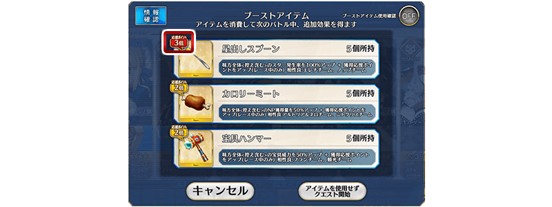
| Boost Item | Team |
|---|---|
| Star Spoon | Satisfaction E∴T∴E |
| Feared Demon King of the Sixth Heaven X | |
| Calorie Meat | |
| Tyrant Shooting Star | |
| Desert Beauty | |
| NP Hammer | Steam Electrical with Papa |
| Bureau of the Left Stables & Sanzang Fashi |
Certain Servants will increases the number of ｢One Candy Drop｣, ｢Instant Noodle｣, or ｢Connacht Coin｣ event items you receive from battle!
Event Servants who will debut during this event will increase the amount of dropped items even more than Other Event Servants.
Increase One Candy Drop, Instant Noodle, & Connacht Coin drops by 2
| Class | Rarity | Servants |
|---|---|---|
| Rider | ★★★★★ | Altria Pendragon [Alter] |
| Caster | ★★★★★ | Nero Claudius |
| Saber | ★★★★ | Frankenstein |
| Archer | ★★★★ | Helena Blavatsky |
| Lancer | ★★★★ | Minamoto-no-Raikou |
| Rider | ★★★★ | Ishtar |
| Assassin | ★★★★ | Nitocris |
| Berserker | ★★★★ | Oda Nobunaga |
Increase One Candy Drop, Instant Noodle, & Connacht Coin drops by 1
| Class | Rarity | Servants |
|---|---|---|
| Archer | ★★★★★ | Altria Pendragon |
| Archer | ★★★★★ | Shinjuku Archer |
| Archer | ★★★★★ | Nikola Tesla |
| Lancer | ★★★★★ | Enkidu |
| Lancer | ★★★★★ | Tamamo-no-Mae |
| Assassin | ★★★★★ | Mysterious Heroine X |
| Rider | ★★★★★ | Quetzalcoatl |
| Rider | ★★★★★ | Queen Medb |
| Caster | ★★★★★ | Xuanzang Sanzang |
| Caster | ★★★★★ | Fuyajo Caster |
| Berserker | ★★★★★ | Nightingale |
| Archer | ★★★★ | Anne Bonny & Mary Read |
| Lancer | ★★★★ | Kiyohime |
| Rider | ★★★★ | Mordred |
| Assassin | ★★★★ | Carmilla |
| Assassin | ★★★★ | Shinjuku Assassin |
| Assassin | ★★★★ | Scathach |
| Caster | ★★★★ | Thomas Edison |
| Caster | ★★★★ | Marie Antoinette |
| Ruler | ★★★★ | Martha |
| Avenger | ★★★★ | Gorgon |
| Caster | ★★★ | Charles Babbage |
※ Please note that Servants for Part 1 and Part 2 may vary.
Equipping the Event Limited Craft Essence 「5★ (SSR) Dive to Blue」 which can be acquired from the Event Item Exchange Shop,
will also increases the number of ｢One Candy Drop｣, ｢Instant Noodles｣, and ｢Connacht Coin｣ event items you receive from battle!.
Equipping Limited Time Craft Essences will increase the number of ｢One Candy Drop｣, ｢Instant Noodles｣, or ｢Connacht Coin｣
event items you receive from battle!
※ Please note that the dropped items aren't 100% guaranteed for each quest.
Equipping Limited Time Craft Essences from Part 1 will also increase the number of ｢One Candy Drop｣, ｢Instant Noodles｣, or
｢Connacht Coin｣ event items you receive from battle!
※ Please note that the dropped items aren't 100% guaranteed for each quest.
| 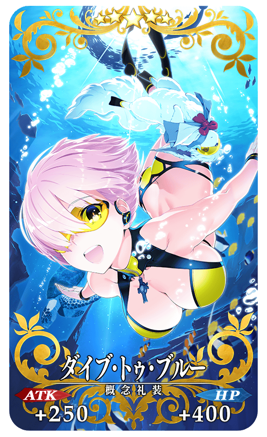 |
★★★★★ SSR
Increase NP Strength by 8% Increase NP Gauge by 30% at the start of battle Increase Connacht Coin, Instant Noodles, and One Candy Drop amount by 1 [Event Only] increased to 2 after Maximum Limit Breakthrough! |
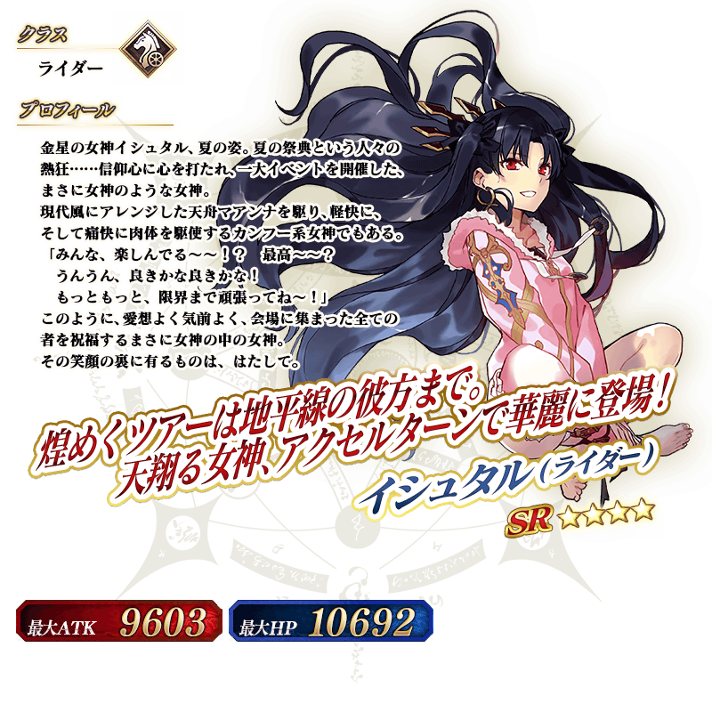
Rider
9603
10692
Rainbow of Venus that Goes Around
the Divine Summit of Heaven
Angalta Seven Colors
the Divine Summit of Heaven
Angalta Seven Colors
Increase Quick Card effectiveness (1 turn) [Overcharge]
Deal heavy damage to all enemies [Level]
Deal heavy damage to all enemies [Level]
※ ｢Venus in the Morning Sky｣ can only be exchange for a copy of Ishtar (Rider) after she permanently joins your party.
※ ｢Venus in the Morning Sky｣ can be obtained from Challenge Quests during Part 2 once all Main Quests are cleared.
Ishtar - Angalta Seven Colors
Exchange Period: July 4, 2018 (Wednesday) 18:00 to July 20, 2018 (Friday) 12:59
※ The items ｢One Candy Drop｣, ｢Instant Noodles｣, ｢Connacht Coin｣, ｢Star Spoon｣, ｢Calorie Meat｣, and ｢NP Hammer｣ will
disappear from your inventory after the deadline.
You can access the Event Shop by going to Da Vinci's workshop and selecting the 「Event Item Exchange」.
※ ｢Hero Crystal: Meteor Fou ALL 4★ (HP)｣ and ｢Hero Crystal: Solar Fou ALL 4★ (ATK)｣ will only become available in the shop
after clearing all the Main Quests for Part 2.
[Event Limited Servant]
|
| 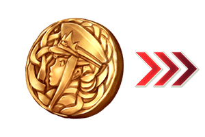 |
[Event Limited Craft Essence]
[Skill Up & Ascension Materials]
[Ascension Materials]
[Other Items]
|
[Event Limited Craft Essence]
[Skill Up & Ascension Materials]
[Ascension Materials]
[Other Items]
|
| 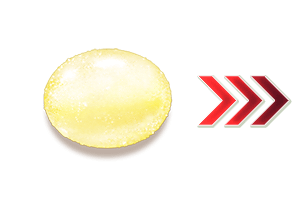 |
[Event Limited Craft Essence]
[Event Limited Ascension Materials]
[Skill Up & Ascension Materials]
[Other Items]
|
[Other Items]
|
Once all Event Quests have been cleared, a 「Challenge Quest」 with an insane amount of difficulty will be unlocked.
The Challenge Quest will not disappear once cleared, which means you can keep challenging the quest as many time as you
prefer and try out different combination of Servants and Craft Essences.
※ Quest clear rewards and dropped items can only be obtained during your first clear.
Only players who have completed ｢Final Singularity: Grand Time Temple - Solomon｣ can participate in this quest.
Crystallized Lore x1
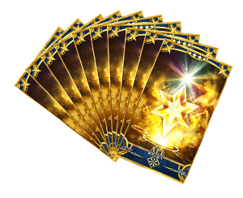 We will add the following item to ｢Da Vinci's Workshop｣ for a limited time only.
July 4, 2018 (Wednesday) 18:00 to July 13, 2018 (Friday) 12:59
| Items | Stock | Cost |
|---|---|---|
| [Limited] Blaze of Wisdom ALL 4★ (SR) x10 Set | 10 | Mana Prism x20 |
Event Item Exchange Shop
Exchange Period: July 4, 2018 (Wednesday) 18:00 to July 20, 2018 (Friday) 12:59 - The items ｢One Candy Drop｣, ｢Instant Noodles｣, ｢Connacht Coin｣, ｢Star Spoon｣, ｢Calorie Meat｣, and ｢NP Hammer｣ will disappear from your inventory after the deadline.
- If you wish to buy everything from this shop, you're gonna need the following:
※ ｢Maximum｣ means all items in the shop except unlimited stock items like QP.
※ ｢Minimum｣ excludes Boost Items, Pieces, Monuments, Silver EXP Cards, and Boost Items.
| Icon | Item | Stock | Cost |
|---|---|---|---|
| イシュタル Ishtar | 4 | 1 | |
| ダイブ･トゥ･ブルー Dive to Blue | 2 | 400 | |
| 呪獣胆石 Cursed Beast Gallstone | 10 | 80 | |
| 封魔のランプ Lamp of Evil-Sealing | 20 | 60 | |
| 大騎士勲章 Great Knight Medal | 20 | 40 | |
| アーチャーモニュメント Archer Monument | 20 | 40 | |
| ランサーモニュメント Lancer Monument | 20 | 40 | |
| ライダーモニュメント Rider Monument | 20 | 40 | |
| 英霊結晶･日輪のフォウくん Hero Crystal: Solar Fou | 2 | 400 | |
| 宝具ハンマー NP Hammer | 20 | 20 | |
| マナプリズム Mana Prism | 500 | 3 | |
| 10,000 QP | --- | 4 |
| Icon | Item | Stock | Cost |
|---|---|---|---|
| ダイブ･トゥ･ブルー Dive to Blue | 1 | 400 | |
| 血の涙石 Tearstone of Blood | 20 | 60 | |
| 無間の歯車 Eternal Gear | 20 | 40 | |
| 蛇の宝玉 Serpent Jewel | 20 | 40 | |
| アーチャーピース Archer Piece | 20 | 40 | |
| ランサーピース Lancer Piece | 20 | 40 | |
| ライダーピース Rider Piece | 20 | 40 | |
| 英霊結晶･日輪のフォウくん Hero Crystal: Solar Fou | 1 | 400 | |
| 英霊結晶･流星のフォウくん Hero Crystal: Meteor Fou | 1 | 400 | |
| カロリーミート Calorie Meat | 20 | 20 | |
| コノートコイン Connacht Coin | --- | 10 |
| Icon | Item | Stock | Cost |
|---|---|---|---|
| ダイブ･トゥ･ブルー Dive to Blue | 1 | 400 | |
| 追憶の貝殻 Shell of Memory | 20 | 40 | |
| 竜の牙 Dragon Fang | 30 | 30 | |
| 励振火薬 Reactive Gunpowder | 30 | 30 | |
| 英雄の証 Proof of Hero | 30 | 30 | |
| 英霊結晶･流星のフォウくん Hero Crystal: Meteor Fou | 2 | 400 | |
| 英霊結晶･太陽のフォウくん Hero Crystal: Sun Fou | 20 | 40 | |
| 英霊結晶･星のフォウくん Hero Crystal: Star Fou | 20 | 40 | |
| 叡智の猛火 Blaze of Wisdom | 100 | 10 | |
| 叡智の大火 Fire of Wisdom | 100 | 5 | |
| 星出しスプーン Star Spoon | 20 | 20 | |
| インスタント麺 Instant Noodles | --- | 10 |
| Quest Name | AP | Type | Battle | Enemies | Class | HP | Bond | EXP | QP | Reward | |||||||||||||||||||||||||||||||||||||||
|---|---|---|---|---|---|---|---|---|---|---|---|---|---|---|---|---|---|---|---|---|---|---|---|---|---|---|---|---|---|---|---|---|---|---|---|---|---|---|---|---|---|---|---|---|---|---|---|---|---|
| Prologue - Arrest under the bridge Part 1/2 | 5AP | Main Quest | |||||||||||||||||||||||||||||||||||||||||||||||
| 1/1 | 1 |
ATK 1,771 (Max: 10,628) | 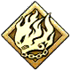 | 587,500 | 415 | 5,690 | 4,400 | ||||||||||||||||||||||||||||||||||||||||||
|
Recommended Level 40 Guest Servant:
| |||||||||||||||||||||||||||||||||||||||||||||||||
| Quest Name | AP | Type | Battle | Enemies | Class | HP | Bond | EXP | QP | Reward | |||||||||||||||||||||||||||||||||||||||
|---|---|---|---|---|---|---|---|---|---|---|---|---|---|---|---|---|---|---|---|---|---|---|---|---|---|---|---|---|---|---|---|---|---|---|---|---|---|---|---|---|---|---|---|---|---|---|---|---|---|
| Prologue - Arrest under the bridge Part 2/2 | 0AP | Main Quest | |||||||||||||||||||||||||||||||||||||||||||||||
| NO BATTLE | 415 | 5,690 | 4,400 | ||||||||||||||||||||||||||||||||||||||||||||||
| Quest Name | AP | Type | Battle | Enemies | Class | HP | Bond | EXP | QP | Reward | |||||||||||||||||||||||||||||||||||||||
|---|---|---|---|---|---|---|---|---|---|---|---|---|---|---|---|---|---|---|---|---|---|---|---|---|---|---|---|---|---|---|---|---|---|---|---|---|---|---|---|---|---|---|---|---|---|---|---|---|---|
| 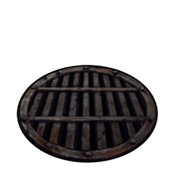 Prisoners Part 1/2 | 0AP | Main Quest | |||||||||||||||||||||||||||||||||||||||||||||||
| NO BATTLE | 415 | 5,690 | 4,400 | ||||||||||||||||||||||||||||||||||||||||||||||
| Quest Name | AP | Type | Battle | Enemies | Class | HP | Bond | EXP | QP | Reward | |||||||||||||||||||||||||||||||||||||||
|---|---|---|---|---|---|---|---|---|---|---|---|---|---|---|---|---|---|---|---|---|---|---|---|---|---|---|---|---|---|---|---|---|---|---|---|---|---|---|---|---|---|---|---|---|---|---|---|---|---|
Prisoners Part 2/2 | 5AP | Main Quest | |||||||||||||||||||||||||||||||||||||||||||||||
| 1/1 | 1 |
ATK 1,784 (Max: 10,706) | 44,920 | 415 | 5,690 | 4,400 | |||||||||||||||||||||||||||||||||||||||||||
|
1 |
Recommended Level 40 Guest Servant:
| ||||||||||||||||||||||||||||||||||||||||||||||||


 38,311
38,311 23,576
23,576{kind=link}
| Quest Name | AP | Type | Battle | Bond | EXP | QP | Reward | ||||||||||||||||||||||||||||||||||||||||||
|---|---|---|---|---|---|---|---|---|---|---|---|---|---|---|---|---|---|---|---|---|---|---|---|---|---|---|---|---|---|---|---|---|---|---|---|---|---|---|---|---|---|---|---|---|---|---|---|---|---|
Escape 2 - Cooperator in chains | 0AP | Main Quest | |||||||||||||||||||||||||||||||||||||||||||||||
| NO BATTLE | --- | --- | --- |
5 5 5 | |||||||||||||||||||||||||||||||||||||||||||||
| Quest Name | AP | Type | Battle | Enemies | Class | HP | Bond | EXP | QP | Reward | |||||||||||||||||||||||||||||||||||||||
|---|---|---|---|---|---|---|---|---|---|---|---|---|---|---|---|---|---|---|---|---|---|---|---|---|---|---|---|---|---|---|---|---|---|---|---|---|---|---|---|---|---|---|---|---|---|---|---|---|---|
Escape 2 - Result? | 5AP | Main Quest | |||||||||||||||||||||||||||||||||||||||||||||||
| 1/1 | 1 |
ATK 1,784 (Max: 10,706) | 83,022 | 455 | 7,370 | 4,800 | |||||||||||||||||||||||||||||||||||||||||||
|
1 2 |
Recommended Level 44 Guest Servant:
| ||||||||||||||||||||||||||||||||||||||||||||||||
| Quest Name | AP | Type | Battle | Enemies | Class | HP | Bond | EXP | QP | Reward | |||||||||||||||||||||||||||||||||||||||
|---|---|---|---|---|---|---|---|---|---|---|---|---|---|---|---|---|---|---|---|---|---|---|---|---|---|---|---|---|---|---|---|---|---|---|---|---|---|---|---|---|---|---|---|---|---|---|---|---|---|
Assassination 1 - Preparation Part 1/2 | 5AP | Main Quest | |||||||||||||||||||||||||||||||||||||||||||||||
| 1/1 | 1 |
ATK 1,666 (Max: 10,780) |  | 65,559 | 465 | 7,815 | 4,900 | ||||||||||||||||||||||||||||||||||||||||||
|
1 2 |
Recommended Level 45 Guest Servant:
| ||||||||||||||||||||||||||||||||||||||||||||||||
| Quest Name | AP | Type | Battle | Bond | EXP | QP | Reward | ||||||||||||||||||||||||||||||||||||||||||
|---|---|---|---|---|---|---|---|---|---|---|---|---|---|---|---|---|---|---|---|---|---|---|---|---|---|---|---|---|---|---|---|---|---|---|---|---|---|---|---|---|---|---|---|---|---|---|---|---|---|
Assassination 2 - Execution | 0AP | Main Quest | |||||||||||||||||||||||||||||||||||||||||||||||
| NO BATTLE | --- | --- | --- | ||||||||||||||||||||||||||||||||||||||||||||||
| Quest Name | AP | Type | Battle | Bond | EXP | QP | Reward | ||||||||||||||||||||||||||||||||||||||||||
|---|---|---|---|---|---|---|---|---|---|---|---|---|---|---|---|---|---|---|---|---|---|---|---|---|---|---|---|---|---|---|---|---|---|---|---|---|---|---|---|---|---|---|---|---|---|---|---|---|---|
Escape 3 - For another hope Part 1/2 | 0AP | Main Quest | |||||||||||||||||||||||||||||||||||||||||||||||
| NO BATTLE | --- | --- | --- | ||||||||||||||||||||||||||||||||||||||||||||||
| Quest Name | AP | Type | Battle | Bond | EXP | QP | Reward | ||||||||||||||||||||||||||||||||||||||||||
|---|---|---|---|---|---|---|---|---|---|---|---|---|---|---|---|---|---|---|---|---|---|---|---|---|---|---|---|---|---|---|---|---|---|---|---|---|---|---|---|---|---|---|---|---|---|---|---|---|---|
Escape 3 - For another hope Part 2/2 | 0AP | Main Quest | |||||||||||||||||||||||||||||||||||||||||||||||
| NO BATTLE | --- | --- | --- |
5 5 5 | |||||||||||||||||||||||||||||||||||||||||||||
| Quest Name | AP | Type | Battle | Enemies | Class | HP | Bond | EXP | QP | Reward | |||||||||||||||||||||||||||||||||||||||
|---|---|---|---|---|---|---|---|---|---|---|---|---|---|---|---|---|---|---|---|---|---|---|---|---|---|---|---|---|---|---|---|---|---|---|---|---|---|---|---|---|---|---|---|---|---|---|---|---|---|
Escape 3 - Result Part 1/4 | 5AP | Main Quest | |||||||||||||||||||||||||||||||||||||||||||||||
| 1/1 | 1 |
ATK 1,568 (Max: 9,408) |  | 73,836 | 475 | 8,270 | 5,000 | ||||||||||||||||||||||||||||||||||||||||||
|
1 2 |
Recommended Level 46 Guest Servant:
| ||||||||||||||||||||||||||||||||||||||||||||||||
| Quest Name | AP | Type | Battle | Enemies | Class | HP | Bond | EXP | QP | Reward | |||||||||||||||||||||||||||||||||||||||
|---|---|---|---|---|---|---|---|---|---|---|---|---|---|---|---|---|---|---|---|---|---|---|---|---|---|---|---|---|---|---|---|---|---|---|---|---|---|---|---|---|---|---|---|---|---|---|---|---|---|
Escape 3 - Result Part 2/4 | 5AP | Main Quest | |||||||||||||||||||||||||||||||||||||||||||||||
| 1/1 | 1 |
ATK 1,573 (Max: 10,184) | 83,508 | 475 | 8,270 | 5,000 | |||||||||||||||||||||||||||||||||||||||||||
|
1 2 |
Recommended Level 46 Guest Servant:
| ||||||||||||||||||||||||||||||||||||||||||||||||
| Quest Name | AP | Type | Battle | Bond | EXP | QP | Reward | ||||||||||||||||||||||||||||||||||||||||||
|---|---|---|---|---|---|---|---|---|---|---|---|---|---|---|---|---|---|---|---|---|---|---|---|---|---|---|---|---|---|---|---|---|---|---|---|---|---|---|---|---|---|---|---|---|---|---|---|---|---|
Escape 3 - Result Part 4/4 | 0AP | Main Quest | |||||||||||||||||||||||||||||||||||||||||||||||
| NO BATTLE | --- | --- | --- | ||||||||||||||||||||||||||||||||||||||||||||||
| Quest Name | AP | Type | Battle | Bond | EXP | QP | Reward | ||||||||||||||||||||||||||||||||||||||||||
|---|---|---|---|---|---|---|---|---|---|---|---|---|---|---|---|---|---|---|---|---|---|---|---|---|---|---|---|---|---|---|---|---|---|---|---|---|---|---|---|---|---|---|---|---|---|---|---|---|---|
Escape 4 - The last escape | 0AP | Main Quest | |||||||||||||||||||||||||||||||||||||||||||||||
| NO BATTLE | --- | --- | --- |
5 5 5 | |||||||||||||||||||||||||||||||||||||||||||||